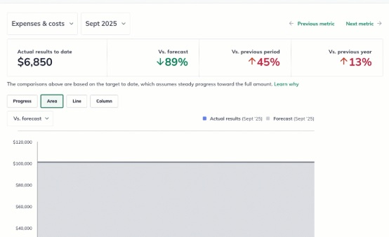
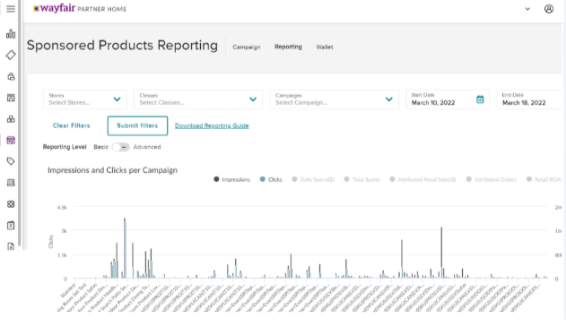

Artificial Intelligence • Business Intelligence • Digital Growth
Using AI-driven tools and customer data analysis to identify trends, improve visibility into performance metrics, and support more informed business decisions.

Through AI-assisted analysis and dashboard development, I explored how customer activity data could be transformed into meaningful business insights for strategic stakeholders.

```This project deepened my interest in AI-enabled decision-making and demonstrated how emerging technologies can support stronger operational performance and strategic planning.
```